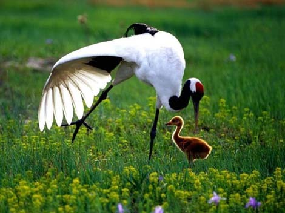

Red-crowned cranes are the second-rarest species of crane, the whooping crane of North America being the rarest. The key threat to red-crowned cranes is the loss and degradation of wetlands in their breeding and wintering grounds, as human development, principally for conversion to agriculture but also industrial and economic development, encroaches rapidly on the wetlands that these large birds require. This loss of habitat is leading to the over-concentration of cranes at a few sites. There are 1,700 to 2,700 red-crowned cranes in all of Eastern Asia, according to the International Union for Conservation of Nature’s Red List of Threatened Species.
